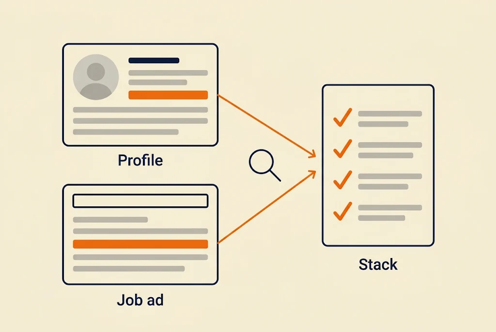
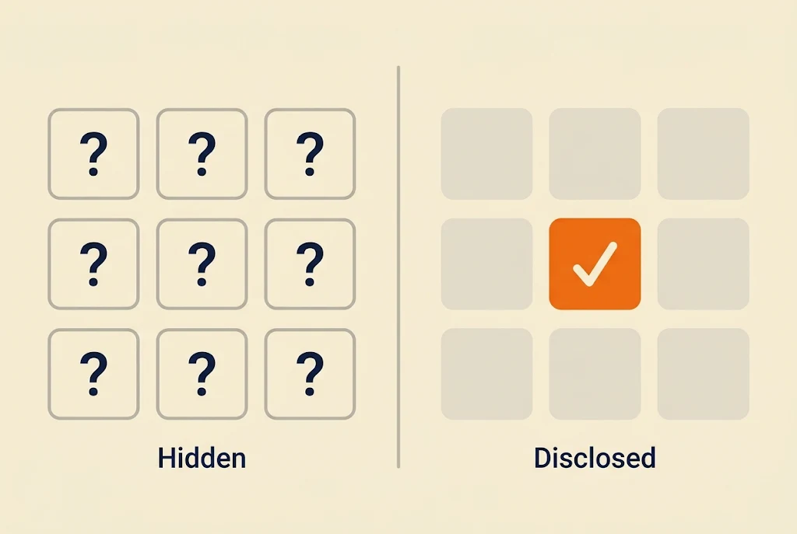
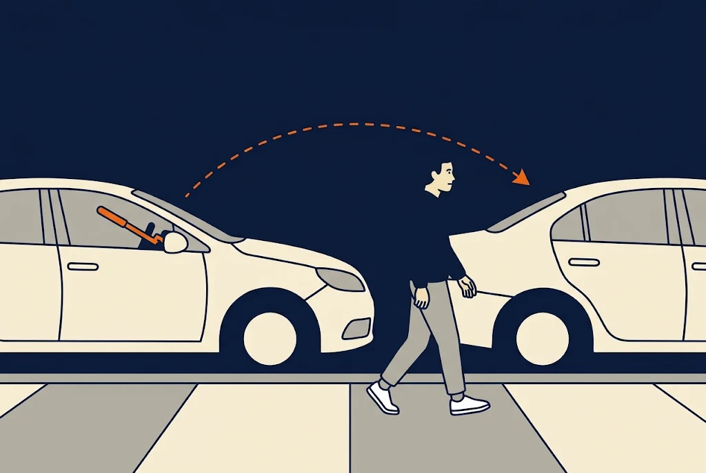

Artificial intelligence (AI) changes the severity of some vulnerabilities. The clearest example I have at the moment is information disclosure: a Server header that shows the web server and its version, an error message that says too much, a service that announces what it is the moment you connect. For years we rated these low or informational. I think that rating needs a second look.
Those two examples are small ones. I mean every vulnerability that tells you anything about the infrastructure, the technology stack and the versions behind an application.
Why It Was Rated Low
Information disclosure means a system gives away more than it needs to. The Server header says nginx 1.18.0. A broken page prints which framework runs the application and where its files sit on the server. By itself that is not a breach, nobody's data is leaving, so scanners and reports put it at the bottom of the list.
There was a reason for that. The attacker still had to do the work. Take the version, read the advisories, find out which known vulnerabilities apply, check whether a public exploit exists, and test it. That takes time and knowledge, and for most attackers it was not worth the effort unless they were already after you.
What AI Changed
That work is quick now. Give an AI model the output of a scan and ask what is known about these versions, and the answer comes back in the time it takes to read it. Which vulnerabilities apply, which ones have public exploits, what to try first. Research that used to take hours is now a question you type. The steps are the same as before. Everything is just much faster, and the test at the end is easier, stronger and quicker too, and open to a lot more people than before.
It goes further than known vulnerabilities. A lot of the software on the internet is open source, so the code is public. An attacker who knows exactly which product and which version you run can point AI at that code and look for a vulnerability nobody has found yet, a zero day. Maybe that takes a week, maybe a month. That is the part that worries me most.
If someone wants to target you, they will. That was true before AI. It is the same now, just a lot quicker and easier. And the more your systems tell the attacker about what you run, the quicker and easier it gets.
What Nmap Gives Away
Nmap is a network scanner, and it is a good example because everyone uses it and it hands out a lot. With the version detection option (-sV), Nmap connects to each open port, sends a series of probes and compares the answers with a database of known services. The result is the product name and often the exact version, for example nginx 1.18.0 or Apache 2.4.41.
Sometimes it gives away even more. A Secure Shell (SSH) service can answer with OpenSSH 8.2p1 Ubuntu 4ubuntu0.5. That one line shows the software, the version, the distribution and the release of the distribution underneath it.
The operating system detection option (-O) looks at how the network stack of the machine answers and guesses the operating system from that. The default scripts option (-sC) adds the title of the web page, the Transport Layer Security (TLS) certificate with its subject and the other host names listed inside it, the SSH host keys and more.
And an attacker may never need to scan you at all. Services like Shodan and Censys scan the whole internet all the time and keep the results, so the question "what does this company run" can often be answered by a search. These two are just examples. There are many more tools and services that do the same, and everything I list in this post is among the simplest ways to find out what you run.
The Rest of the Stack Gives It Away Too
The scan is only one source. A web application tells its story in many places, and this is only a short list of the simplest ones:
- Response headers such as X-Powered-By, X-AspNet-Version and Via.
- Cookie names. PHPSESSID points to PHP, JSESSIONID to Java and ASP.NET_SessionId to ASP.NET.
- File extensions in the address like .php, .aspx and .jsp.
- The default 404 page, which looks different for every server and framework.
- Detailed error messages. A stack trace shows the framework, the file paths and the libraries, and a database error shows which database runs behind the application, often with the version.
- Paths and files such as
/wp-content/, generator meta tags, JavaScript file names and JavaScript source maps. - The favicon, which can be fingerprinted and searched for.
- Domain Name System (DNS) records, where mail and verification entries show which providers the company uses.
A version number does not prove that something is vulnerable. Some Linux distributions fix security bugs without changing the version number. But the version tells the attacker exactly where to start looking, and that is enough.
The People Give It Away Too
Not everything comes from your servers. Employees list their experience on LinkedIn: the languages, frameworks, cloud provider and tools they work with every day. Job descriptions are even more direct, because the company writes down the exact stack it wants a new hire to know.
An attacker can read the profiles of a few of your developers and your open positions and have a good picture of the stack without sending a single request. This is the open source intelligence (OSINT) part of a test, and a real attacker does the same thing. It is another side of the human element I wrote about in the last post.

Hide What You Run

So I think one of the most important things at the moment is to hide what is being used, as fully as you can. Start with the places you control. This list is a starting point and not a complete one, because there are more places and more tools than I can name here:
- Remove the version from the Server header, and the name too where the software allows it. In nginx that starts with
server_tokens off. In Apache it isServerTokens ProdandServerSignature Off. - Remove X-Powered-By and similar headers. In PHP, set
expose_php = Off. - Turn off debug mode and detailed errors in production, and show a generic error page that says nothing about the framework or the database.
- Rename session cookies that carry the default name of the framework.
- Turn off or change service banners wherever the service allows it.
- Put a reverse proxy in front, so headers can be replaced or removed before they leave your network.
You will not hide everything. Nmap does not only read banners, it also looks at how a service behaves when it gets a probe, so a determined scanner can still guess some of it. Default pages and file names also take real effort to change. The goal is to give away as little as possible, and to make the attacker work for every piece.
This Is Not a Replacement for Security
Hiding the stack does not replace patching, hardening, testing or any other control. Do those first and keep doing them. A vulnerability is just an unintended way of using something, and it exists whether the attacker knows your version or not. Hiding only makes you a harder target.
A steering wheel lock does not make a car impossible to steal. A thief who sees two cars, one with the lock and one without, walks to the one without it. Attackers think the same way. The harder target you are, the more of them pass on you and move on to the next one. That's it.

So when a finding like this reaches a report, I would not dismiss it as informational by default. Look at the real impact: what it lets an attacker learn, and how fast they can use it now.
Maybe I'm right, maybe I'm wrong, those are just my thoughts while pentesting. If you want to see what your own systems give away, run Nmap against systems you own or have permission to test. What would an attacker learn about your company before sending a single request?
Thanks for reading. If this was useful, there is more on the blog, and more coming.
I'm Filip Kecman, a penetration tester and security researcher. I write about what I test with my own hands and about what I learn along the way.
If you want to talk about any of this, connect with me on LinkedIn. If you have an idea for a collaboration, or you need a penetration test, reach out through kecman.co.